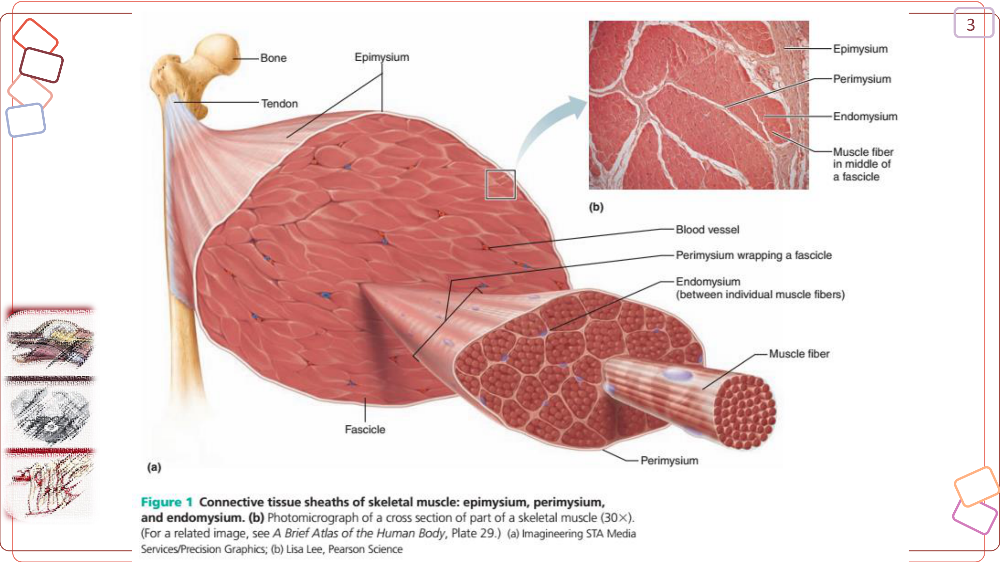
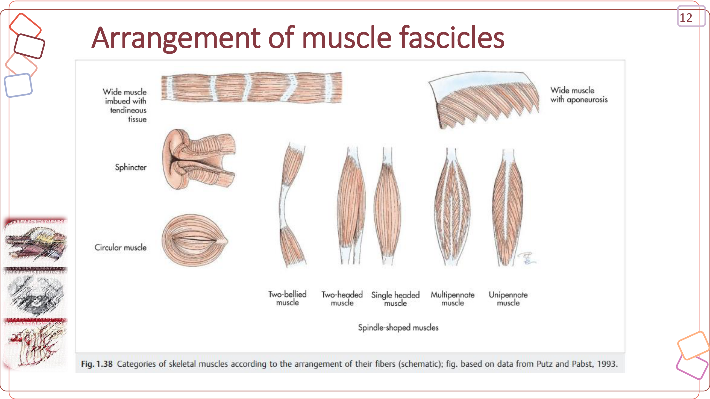
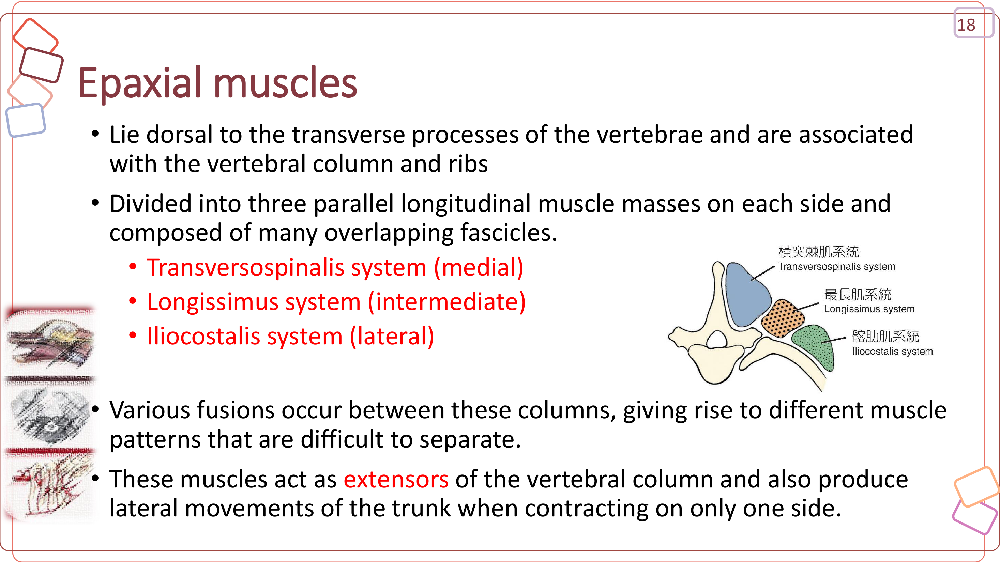
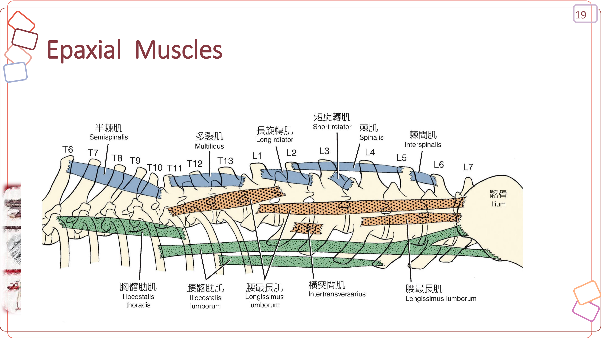
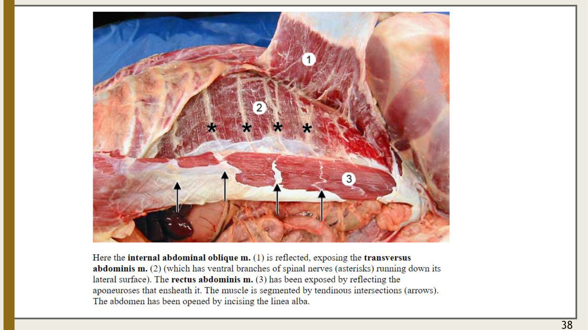

重點摘要
- 命名原則是整頁最大的省力工具：把肌名拆成「位置／形狀＋起止點／方向＋動作」幾乎能猜出所有肌肉的位置與功能，不需要逐條死背；建議先熟讀「肌肉學總論」的命名表，後面十幾個章節的肌名才不會變成無意義的拉丁文噪音。
- 肩胛骨與軀幹之間沒有骨性連接，完全靠斜方肌、菱形肌、闊背肌、腹鋸肌（＋臂頭肌、胸肌群）懸吊固定，是前肢跛行理學檢查必須觸診的一群肌肉，也是本頁「肩胛懸吊與胸肌群」章節的核心。
- 軸上三系統由外而內固定排列：髂肋肌系統 → 最長肌系統 → 橫脊肌系統，彼此融合難以完全分開，但排列順序是選擇題常考重點。
- 呼吸肌方向相反、位置相鄰，是最容易混淆的一組：外肋間肌拉肋骨向前（吸氣），內肋間肌拉肋骨向後（呼氣）；腹壁四層（外斜肌→內斜肌→腹橫肌＋腹直肌）在正中線匯合成白線，是剖腹手術標準入路。
- 前肢肌肉可用「伸肌＝橈神經、屈肌＝正中／尺神經」的邏輯快速定位：肩胛與上臂的伸肌群（棘上肌、棘下肌經肩胛上神經；三頭肌經橈神經）與屈肌群（肱二頭肌、肱肌經肌皮神經）分屬不同神經；前臂則是背外側伸肌群走橈神經、掌內側屈肌群走正中神經（尺側屈腕肌與深指屈肌尺側頭例外，走尺神經）——這條規則是跛行神經學定位的基礎架構。
- 橈神經麻痺是前肢周邊神經病變的經典臨床表現：因橈神經同時支配肘關節伸肌（三頭肌）與腕、指伸肌群，受損後表現為肘關節下垂、無法負重、腕掌側屈曲觸地（knuckling），是神經學檢查常考的定位型態。
- 後肢的神經定位邏輯是：股神經＝大腿前側伸肌（股四頭肌，負重關鍵）；閉孔神經＝大腿內側內收肌群；坐骨神經＝大腿後側肌群＋小腿全部肌肉。坐骨神經受損可站立負重（股四頭肌未受影響）但無法屈跗關節與伸／屈趾；股神經受損則完全無法負重、後肢會直接塌陷——兩者臨床表現差異是神經學定位的高頻考點。
- 跟總腱（common calcanean tendon，相當於阿基里斯腱）由腓腸肌、淺指屈肌與大腿後側的股二頭肌／半腱肌／股薄肌肌腱共同匯聚而成，斷裂後會出現典型的「跗關節下垂（dropped hock）」步態，是後肢肌腱損傷的重要解剖基礎。
- 股四頭肌是支撐體重最有力的伸膝肌，髕骨鑲嵌於其止腱內、經髕韌帶止於脛骨粗隆，是小型犬好發的髕骨脫位（patellar luxation）相關解剖構造，複習時務必與骨骼系統頁面的脛骨粗隆、股骨滑車對照。
肌肉學總論 Introduction of Myology
本節整理肌肉的分類、微觀到巨觀的構造層次、肌肉附著方式（起點/止點/肌腱/腱膜）、肌束排列型態，以及肌肉命名原則——這是後面軀幹肌群、頭頸部肌肉、前肢與後肢肌肉小節共用的語言，建議先熟讀本節。命名原則理解後，看到長串拉丁文肌名（如 M. iliocostalis lumborum）就能直接拆解出「髂骨＋肋骨＋腰部」的意思，不需要死背。
肌肉的三種類型
| 類型 | 存在位置 | 細胞形態 | 橫紋 | 控制方式 | 神經 |
|---|---|---|---|---|---|
| 骨骼肌 Skeletal m. | 體表壁、顏面、四肢與骨骼相聯 | 長圓柱狀，多核（位於細胞側） | 有 | 隨意（及部分反射動作） | 中樞 CNS、周邊神經 PNS |
| 平滑肌 Smooth m. | 中空器官管壁、血管、眼、腺體、皮膚 | 紡錘狀，單核（位於細胞中央） | 無 | 不隨意 | 自主神經 ANS |
| 心肌 Cardiac m. | 心臟 | 長圓柱狀，具分支，單核；細胞間以間板 intercalated disks相連 | 有 | 不隨意 | 自主神經 ANS |
本頁聚焦於骨骼肌（skeletal muscle）——獸醫解剖學實習所指的「橫紋肌」若無特別說明，即指骨骼肌（心肌雖也有橫紋但不可隨意控制，兩者不可混淆）。大多數骨骼肌兩端（起點、終點）跨越一個以上關節，以肌腱附著於兩塊骨骼上，收縮時以可動性的關節為軸，將一骨骼像另一骨骼拉近，類似槓桿原理。
骨骼肌的構造層次（由巨觀到微觀）
| 層次 | 英文 | 包覆的結締組織 |
|---|---|---|
| 肌肉 Muscle | — | Fascia 肌膜：最外層，分隔並包圍肌群；Epimysium 肌外衣：位於肌膜之內，緊包圍住整條肌肉 |
| 肌束 Fasciculus (muscle bundle) | — | Perimysium 肌束衣：包圍肌束 |
| 肌纖維 Muscle fiber (muscle cell) | 多核，呈多核細胞構造（由單核 myoblast 融合而成） | Endomysium 肌內膜：包圍每條肌纖維；Sarcolemma 肌細胞膜為神經末梢及血管終端之所在 |
| 肌原纖維 Myofibril | — | 由 Sarcolemma 包圍其集合體；Sarcomere 肌節＝收縮單位 |
| 肌原纖維絲 Myofilament | Thick filament: 肌凝蛋白絲 Myosin；Thin filament: 肌動蛋白絲 Actin；另有 Troponin、Tropomyosin | — |

肌肉的附著 Attachment of Muscles
肌肉收縮時移動位置較少的一端，通常是近側（proximal）附著、較靠近體軸／軀幹。多為肌肉細胞對骨骼的直接附著。
肌肉收縮時移動位置較多的一端，通常是遠側（distal）附著。經由肌腱或腱膜自肌肉細胞延伸至骨骼。
| 附著構造 | 說明 |
|---|---|
| 肌腱 Tendon | 緻密、規則排列的纖維結締組織，聚集成邊界清楚的小束，連接肌肉與骨骼；幾乎沒有血液供應，但有少數神經末梢 |
| 腱膜 Aponeurosis | 組成與肌腱相同，但排列成薄片狀的結締組織（而非束狀） |
| 韌帶 Ligament | 連接骨與骨之間的緻密纖維結締組織，纖維排列較不規則，具較多彈性纖維，功能為穩固關節、固定骨骼位置 |
| 肌膜 Fascia | 包住肌外衣、分隔各獨立肌肉，並包圍特定解剖構造附近的肌群；可分深肌膜（如胸腰肌膜 thoracolumbar fascia，常形成肌肉起終點）與淺肌膜（位於皮下，多含脂肪） |
肌肉的兩端依附著處是否明顯，稱為腱附著（Tendinous attachment）或肌附著（Flashy attachment）；大多數骨骼肌呈紡錘體狀，起端稱為肌頭（caput），中央肥厚部份為肌腹（venter），終端稱為肌尾（cauda）。
肌束排列型態（決定肌肉的力量與活動範圍）

| 型態 | 特徵 | 舉例 |
|---|---|---|
| 紡錘狀 Fusiform | 肌腹寬於起止點，肌纖維與長軸平行 | 肱二頭肌 biceps brachii |
| 帶狀 Strap-like | 寬度均勻的長條狀 | 胸骨舌骨肌 sternohyoideus |
| 會聚狀 Convergent | 起點比止點寬，力量集中於止點，力量大 | 胸大肌 pectoralis major（三角形肌） |
| 單羽狀 Unipennate | 肌纖維斜向附著於肌腱單側，呈半羽毛狀 | 伸趾長肌 extensor digitorum longus |
| 雙羽狀 Bipennate | 肌纖維由肌腱兩側斜向附著 | 股直肌 rectus femoris |
| 多羽狀 Multipennate | 多條羽狀肌束由各方向附著於同一寬大肌腱 | 三角肌 deltoid |
| 環狀／括約肌 Circular / Sphincter | 肌束呈同心圓環繞，圍繞體表開口 | 口輪匝肌 orbicularis oris、眼輪匝肌 orbicularis oculi |
羽狀肌因單位面積內肌纖維數目多，力量較大但收縮幅度較小、容易疲勞；紡錘狀／帶狀肌收縮幅度較大但力量相對較小。這項原則有助於理解不同肌肉在功能上的分工（例如穩定關節 vs. 產生大範圍活動）。
肌肉的命名原則（全部都重要）
| 命名依據 | 說明／舉例 |
|---|---|
| 位置 Location | 依所在解剖區域命名，如 brachialis（肱部）、pectoralis（胸部）、glutealis（臀部） |
| 形狀 Shape | deltoideus（三角形）、orbicularis（環形）、rhomboideus（菱形）、trapezius（梯形）、teres（長且圓） |
| 相對大小 Relative size | maximus（最大）、minimus（最小）、longus／longissimus（長／最長）、brevis（短），如 gluteus maximus（臀大肌） |
| 肌纖維方向 Direction of fibers | rectus（直的）、obliquus（斜的）、transversus（橫的），如 rectus abdominis（腹直肌） |
| 起止點位置 Location of attachments | 複合起止點命名，如 sternocephalicus（起於胸骨、止於頭部）、brachioradialis（肱橈肌） |
| 起點數目 Number of origins | biceps（二頭）、triceps（三頭）、quadriceps（四頭） |
| 動作 Action | flexor（屈肌）、extensor（伸肌）、adductor（內收肌）、abductor（外展肌）、levator（上舉肌）、depressor（下壓肌）、tensor（張肌）、sphincter（括約肌） |
看到肌名時可拆解成「位置／形狀＋起止點／方向＋動作」，例如 M. iliocostalis thoracis ＝ ilio（髂骨）＋ costal（肋骨）＋ thoracis（胸部）；M. sacrocaudalis dorsalis lateralis ＝ sacro（薦骨）＋ caudalis（尾）＋ dorsalis（背側）＋ lateralis（外側）。熟悉這套規則後，即使沒看過的肌肉名稱也能猜出大致的位置與功能。
肌肉動作術語
使關節角度變小
使關節角度變大
使肢體趨向體軸
使肢體遠離體軸
Pronator 前旋肌：旋轉前肢使掌面向下（後）；Supinator 後旋肌：旋轉前肢使掌面向上（前）；Protractor 前引肌：使身體部位向前移動、超越正常解剖位置；Retractor 後引肌：使身體部位向後移動，回復或超過正常解剖位置。協同肌（Agonist）指肌群作同一方向運動者；拮抗肌（Antagonist）在主要肌肉收縮時作反向放鬆的肌肉。
與骨骼系統頁面的連結：肌肉的起止點幾乎都對應到骨骼系統頁面介紹過的表面標記構造，例如 tuberosity（粗隆）、tubercle（結節）、crest（嵴）、fossa（窩）多半是肌腱附著處；理解「骨骼標記＝肌肉附著地標」這個對應關係，記憶軀幹肌群與四肢肌群的起止點會容易許多。
肩胛懸吊與胸肌群 Extrinsic Thoracic Limb Muscles
本節整理的肌肉屬於「外在肌」（extrinsic）：一端固定於軀幹（頭頸、脊柱或胸骨），另一端附著於前肢骨骼（肩胛骨、肱骨），功能是把前肢「懸吊、固定」在軀幹上並驅動前肢帶的整體運動——與後面「肩胛與上臂肌群」「前臂肌群」介紹的「內在肌」（intrinsic，完全位於肢體內、只跨越肢體本身的關節）是不同的分類邏輯，複習時務必先分清楚這條界線。
連接軀幹與前肢的淺層背側肌
犬貓的肩胛骨與軀幹之間沒有骨性連接（複習骨骼系統頁面：鎖骨已退化），完全依賴以下這群肌肉懸吊固定，是前肢承重、著地時的避震來源：
| 肌肉 | 起點 | 止點 | 作用 | 神經支配 |
|---|---|---|---|---|
| 斜方肌 Trapezius（頸部＋胸部） | 頸部：頸背側正中縫；胸部：棘上韌帶（T3–9） | 肩胛骨棘上緣 | 上舉並外展前肢 | 副神經 Accessory n. |
| 菱形肌 Rhomboideus（頭／頸／胸部） | 枕骨項嵴／頸背側正中縫／T1–7棘突 | 肩胛骨背側緣 | 上舉前肢，將肩胛骨拉向軀幹；單側收縮可使頭頸側屈 | 頸、胸脊神經腹側支 |
| 闊背肌 Latissimus dorsi | 胸腰筋膜、後2–3根肋骨 | 肱骨大圓肌粗隆 | 將前肢向後、向側方拉；支撐體重時可屈曲肩關節 | 胸背神經 Thoracodorsal n.（C7、C8、T1） |
| 腹鋸肌 Serratus ventralis（頸部＋胸部） | 後5節頸椎橫突／前7–8根肋骨 | 肩胛骨內側面（鋸齒面） | 支撐軀幹重量、使肩胛骨下壓（軀幹懸吊於前肢之間的主要肌肉） | 頸神經腹側支＋胸長神經 Long thoracic n.（C7） |
| 夾肌 Splenius | 第1–2胸椎、項韌帶、頸背側正中縫 | 顳骨乳突 | 伸展並上抬頭頸，單側收縮使頭頸側屈 | 頸神經 |
| 肩胛橫突肌 Omotransversarius | 環椎（C1）翼 | 肩胛骨遠端棘突（帶狀，覆蓋於斜方肌下方） | 雙側／單側屈曲頸部；將肩胛骨拉向前方 | 副神經 Accessory n. |
肩胛骨懸吊肌群損傷會直接影響前肢承重能力；臨床上評估前肢跛行時，除了骨骼與關節，也需觸診檢查這群肌肉（尤其斜方肌、闊背肌）是否有腫脹、疼痛或萎縮。
連接軀幹與前肢的腹側肌（胸肌群、臂頭肌）
| 肌肉 | 起點 | 止點 | 作用 |
|---|---|---|---|
| 臂頭肌 Brachiocephalicus（鎖骨臂肌＋鎖骨頭肌） | 所有附著端皆可移動（無固定骨性起點） | 肱骨三角肌粗隆／顳骨乳突、頸背側正中縫 | 前引前肢、伸展肩關節；將頭頸拉向側方 |
| 淺胸肌 Superficial pectoral（下行部＋橫行部） | 胸骨前端／胸骨柄 | 肱骨大結節嵴 | 肢體未承重時內收前肢，或承重時防止外展；將軀幹拉向側方 |
| 深胸肌 Deep pectoral | 胸骨腹側部 | 肱骨小結節（部分肌肉）、大結節嵴 | 前肢承重固定時將軀幹前拉、伸展肩關節；未承重時將肢體後拉、屈曲並內收肩關節 |
臂頭肌具有鎖骨間隔（clavicular intersection），將其分為近端的鎖骨頭肌（cleidocephalicus，再分頸部與乳突部）與遠端的鎖骨臂肌（cleidobrachialis）；此間隔對應犬貓退化鎖骨的殘餘骨化中心（複習骨骼系統頁面）。
軸上肌群 Epaxial Muscles
軸上肌群位於椎骨橫突背側，主要作為脊柱的伸肌（extensor），單側收縮時可產生軀幹的側向運動；由淺至深、由外至內分為三個縱向系統，彼此有大量重疊融合，界線不易完全分開。
分胸髂肋肌、腰髂肋肌。作用：脊柱側向運動、固定脊柱、呼氣時將肋骨向後拉。
由髂骨延伸至頭部，分頭最長肌、頸最長肌、胸最長肌、腰最長肌，與胸髂肋肌共同構成最強壯的軀幹伸肌群。
命名變化最多，含棘肌、半棘肌、多裂肌、旋轉肌、棘間肌、橫突間肌等，多為短小節段肌，主司固定脊柱與精細旋轉。


| 系統 | 主要肌肉 | 作用 |
|---|---|---|
| 髂肋肌 Iliocostalis | 胸髂肋肌、腰髂肋肌 | 脊柱側向運動、固定脊柱、呼氣時拉肋骨向後 |
| 最長肌 Longissimus | 頭最長肌、頸最長肌、胸最長肌、腰最長肌 | 脊柱伸展與固定；頭最長肌另可伸展／旋轉寰枕關節 |
| 橫脊肌 Transversospinalis | 棘肌／半棘肌、半棘頸肌、多裂肌、長／短旋轉肌、棘間肌、橫突間肌 | 固定脊柱，頭頸部分支可上抬並側屈頭頸（複雜肌 complexus、頭半棘肌等） |
與骨骼系統頁面呼應的記憶法：覆蓋胸腰椎背側的最長肌＋棘肌對應牛肉分切的「沙朗／紐約客牛排」——這正是本節介紹的最長肌系統與橫脊肌系統，是回顧脊柱結構與背側肌群相對位置的好方法。
頸部腹側肌群 Ventral Muscles of the Neck（脊柱下肌）
頸部腹側肌可視為軸下肌（hypaxial）的一部分，多與吞嚥、頭頸活動、前肢帶前引相關：
| 肌肉 | 起點 | 止點 | 作用 |
|---|---|---|---|
| 胸頭肌 Sternocephalicus | 胸骨柄 | 頸乳突部：顳骨乳突；頸枕部：枕骨背側線 | 使頭頸屈曲，並拉向一側 |
| 胸舌骨肌 Sternohyoideus | 胸骨柄深面、第1肋軟骨 | 舌骨 | 向後牽引喉頭、舌骨與舌根 |
| 胸甲狀肌 Sternothyroideus | 與胸舌骨肌相近 | 甲狀軟骨 | 向後牽引喉頭 |
| 頭長肌 Longus capitis | 頸椎（C6–C2）橫突 | 枕骨基部肌結節 | 屈曲寰枕關節，使頸部向下 |
| 頸長肌 Longus colli | 胸椎、頸椎凸面／橫突 | 頸椎腹側面、寰椎腹側結節 | 使頸部向下彎曲 |
| 斜角肌 Scalenus（背側＋中間部） | 頸椎橫突 | 第1–2肋骨（背側部）／第3–4或6–8肋骨（中間部） | 吸氣時將肋骨向前拉；使頸部向下或側方彎曲 |
頸動脈鞘 Carotid sheath：頸部深肌膜包覆總頸動脈（common carotid a.）、迷走交感幹（vagosympathetic trunk）、頸內靜脈（internal jugular v.）與氣管淋巴幹，共同構成頸動脈鞘，是頸部血管神經手術入路的重要解剖概念；胸鎖乳突肌等淺層肌肉的深面即為此鞘。
胸壁與呼吸相關肌群 Thoracic Wall & Respiratory Muscles
胸壁肌群多與呼吸動作直接相關，依吸氣／呼氣分工整理如下：
- 斜角肌 Scalenus：拉肋骨向前
- 頭側背鋸肌 Serratus dorsalis cranialis：拉肋骨向前
- 外肋間肌 Mm. intercostales externi：收縮時將肋骨向前（頭側）拉，擴大胸腔
- 胸直肌 Rectus thoracis：延續腹直肌，協助吸氣
- 尾側背鋸肌 Serratus dorsalis caudalis：拉肋骨向後
- 內肋間肌 Mm. intercostales interni：收縮時將肋骨向後（尾側）拉，縮小胸腔
- 腹外斜肌 External abdominal oblique：主要為腹壁肌，但呼氣時也協助壓縮胸腹腔
- 胸橫肌 Transversus thoracis：位於胸骨內面，協助呼氣
| 肌肉 | 形性／起止點 | 作用 |
|---|---|---|
| 外肋間肌 Mm. intercostales externi | 起：肋骨尾側緣；止：後一肋骨顱側緣 | 將肋骨拉近（吸氣） |
| 內肋間肌 Mm. intercostales interni | 起：肋骨顱側緣；止：前一肋骨尾側緣 | 將肋骨拉近（呼氣） |
| 肋舉肌 Mm. levatores costarum | 起：胸椎橫突；止：後一肋骨顱側緣 | 吸氣 |
| 胸直肌 M. rectus thoracis | 起：第1肋；止：第2–4肋腹側端 | 吸氣 |
| 胸橫肌 M. transversus thoracis | 起：胸骨內側面；止：第2–7肋軟骨 | 呼氣 |
橫膈（diaphragm）是最主要的吸氣肌，附著於劍狀軟骨與後段肋弓（複習骨骼系統頁面），收縮時使胸腔容積增加；橫膈本身雖非本頁課程投影片重點涵蓋範圍，但臨床上（如橫膈疝氣 diaphragmatic hernia）與胸壁肌群、腹壁肌群的功能密切相關，複習時建議一併理解。
腹壁肌群與白線 Abdominal Wall & Linea Alba
腹壁由淺至深共四層肌肉包覆，纖維方向兩兩交叉（外斜肌與內斜肌互相垂直），提供腹壁強度與支撐內臟的功能；最內層的腱膜在腹側正中線匯合形成白線（linea alba）。
| 層次 | 肌肉 | 起點 | 止點 | 纖維方向 |
|---|---|---|---|---|
| 第1層（最淺） | 腹外斜肌 External abdominal oblique | 肋部：4–12肋、深部筋膜；腰部：最後肋骨、胸腰筋膜 | 腹部／骨盆腱膜（經腹股溝環分隔） | 由前上斜向後下 |
| 第2層 | 腹內斜肌 Internal abdominal oblique | 最後肋骨、胸腰筋膜、腹直肌、髖結節、腹股溝韌帶 | 白線 | 與腹外斜肌垂直交叉 |
| 第3層（最深） | 腹橫肌 Transversus abdominis | 肋部：第8–13肋中段；腰部：腰椎橫突、胸腰筋膜 | 劍狀軟骨腱膜、骨盆 | 橫向 |
| 腹側正中 | 腹直肌 Rectus abdominis | 第1肋軟骨（寬扁肌腱） | 恥骨櫛、骨盆聯合 | 縱向，具5–6條腱劃（tendinous intersections） |
共同作用：腹壓（abdominal press）——呼氣、排尿、排便、分娩、支撐腹腔臟器、使骨盆前引、協助脊柱屈曲。

白線與腹股溝管
腹側正中線的一條膠原纖維帶（寬約0.1–1.0公分），自劍狀軟骨延伸至骨盆聯合，由左右兩側腹壁肌的腱膜在正中線交會形成；在最後肋骨水平的橫切面上可見臍環（anulus umbilicalis）。腹直肌鞘（rectus sheath）主要由其他腹壁肌的腱膜構成，包覆腹直肌。
腹壁肌與其腱膜間的結締組織裂隙，起自深腹股溝環（deep inguinal ring），由腹股溝韌帶腹側端、腹內斜肌尾側緣、腹直肌外側緣共同構成。公犬：作為睪丸下降與精索的通道；母犬：含子宮圓韌帶（round ligament）與脂肪。
臨床提醒：腹股溝管是腹股溝疝氣（inguinal hernia）與絕育手術（尤其公犬睪丸下降異常、隱睪 cryptorchidism）需要理解的重要解剖構造；剖腹手術（laparotomy）多沿白線切開，因白線血管分布少、癒合相對容易，是腹部手術的標準入路。
尾部肌群 Muscles of the Tail
尾部肌肉同樣分軸上（背側）與軸下（腹側）兩群，成對排列於尾椎兩側：
- 軸上肌群：側背薦尾肌（sacrocaudalis dorsalis lateralis，長舉尾肌）、內背薦尾肌（sacrocaudalis dorsalis medialis，短舉尾肌）、尾背橫突間肌——主要作用為上抬尾巴、側向運動。
- 軸下肌群：外腹薦尾肌、內腹薦尾肌（sacrocaudalis ventralis lateralis／medialis）——主要作用為壓低尾巴、側向運動。
尾部肌肉的功能與情緒表現、排便姿勢及會陰周邊手術（如會陰疝氣修補）皆有關聯，臨床檢查尾巴活動度與觸診肌肉張力可作為神經功能評估的一部分（如馬尾症候群 cauda equina syndrome 患畜常見尾巴無力或麻痺）。
頭頸部肌肉簡介 Muscles of the Head (Brief)
頭部肌肉種類繁多、神經支配複雜，非本頁重點；此處僅簡短整理犬貓面部肌肉的分類架構，方便與軀幹肌群的命名邏輯對照。咀嚼肌（顳肌、咬肌、翼肌）已在骨骼系統頁面的「頭骨」小節介紹過起止點與臨床觸診地標，此處不重複展開。
頭部肌肉六大分區
| 肌群 | 神經支配 |
|---|---|
| 顏面部肌群 Facial musculature（含皮肌、口周、眼周、耳周肌肉） | 顏面神經 Facial n. |
| 咀嚼相關肌群 Masticatory musculature（顳肌、咬肌、翼肌，詳見骨骼系統頁面） | 三叉神經下頜支 Trigeminal n., mandibular br. |
| 舌部肌群 Tongue musculature | 舌下神經 Hypoglossal n. |
| 咽部肌群 Pharyngeal musculature | 舌咽神經、迷走神經 Glossopharyngeal & Vagus n. |
| 喉部肌群 Laryngeal musculature | 迷走神經 Vagus n. |
| 眼球肌群 Eye musculature | 動眼、滑車、外展神經 Oculomotor, Trochlear & Abducent n. |
皮肌 M. cutaneous（頭頸部）
皮肌以疏鬆結締組織連接真皮層與其下方的皮下肌膜，肌質薄且常含脂肪，作用為移動皮膚、毛髮、包皮、乳腺周邊皮膚：
- 頸闊肌 Platysma：頭頸部皮肌中最發達者，纖維由頸背側正中縫向前腹側掃過頸部背側與面部外側，止於口角並與口輪匝肌相融合。
- 淺頸括約肌 M. sphincter colli superficialis、深頸括約肌 M. sphincter colli profundus：分口部、瞼部、中間部，構成頰部、唇部、外耳周邊皮肌基礎。
- 軀幹皮肌 M. cutaneus trunci：覆蓋胸腹部背外側大部分皮下區域，公犬形成包皮肌（preputial m.），可將包皮拉回覆蓋陰莖龜頭；母犬則參與乳腺上肌（supramammaricus）。
面部淺層肌肉舉要
口輪匝肌 Orbicularis oris（閉口、縮小鼻孔）、頰肌 Buccinator（將食物由前庭推回咀嚼面）、顴骨肌 Zygomaticus（固定並後拉口角）、犬齒肌、上下切齒肌。
眼輪匝肌 Orbicularis oculi（閉合眼瞼裂）、額肌 Frontalis、內／外眼角舉肌與後引肌、鼻唇舉肌 Levator nasolabialis（上舉上唇、擴大鼻孔）。
外耳周邊另有一大群「耳肌」（前耳肌、腹耳肌、後耳肌群），數量多達十餘條，主要功能為轉動耳殼、改變耳道開口方向，是犬貓表情與聽覺定向的重要構造，但因臨床相關性較低，本頁不逐一展開。
與骨骼系統頁面的連結：咀嚼肌（顳肌、咬肌、翼肌、二腹肌）已在骨骼系統頁面「頭骨」小節詳細介紹（含觸診地標、矢狀嵴等）；建議複習肌肉系統時，同步翻回骨骼系統頁面對照顳窩（temporal fossa）、顴弓（zygomatic arch）、下頜冠突（coronoid process）等骨骼構造與肌肉附著點的對應關係。
肩胛與上臂肌群 Intrinsic Muscles of the Shoulder & Brachium
本節開始進入前肢的內在肌（intrinsic）：這些肌肉完全位於前肢本身，只跨越肩關節或肘關節，不像上一節的外在肌會連接回軀幹。依部位分為肩胛外側、肩胛內側、上臂前側（屈肘）、上臂後側（伸肘）四群，神經支配是分區的關鍵記憶線索。
肩胛外側 Lateral Scapula and Shoulder
| 肌肉 | 起點 | 止點 | 作用 | 神經支配 |
|---|---|---|---|---|
| 三角肌 Deltoideus（肩胛部＋肩峰部） | 肩胛骨棘與肩峰突 | 肱骨三角肌粗隆 | 屈曲肩關節 | 腋神經 Axillary n. |
| 棘下肌 Infraspinatus | 肩胛骨棘下窩 | 肱骨大結節外側面小區域 | 伸展或屈曲肩關節；外展肩關節、使肱骨外旋 | 肩胛上神經 Suprascapular n. |
| 小圓肌 Teres minor | 肩胛骨盂下結節與尾側緣遠端1/3 | 肱骨小圓肌粗隆 | 屈曲肩關節、使肩關節外旋，承重時防止內旋 | 腋神經 Axillary n. |
| 棘上肌 Supraspinatus | 肩胛骨棘上窩 | 肱骨大結節 | 伸展並穩定肩關節 | 肩胛上神經 Suprascapular n. |
肩胛內側 Medial Scapula and Shoulder
| 肌肉 | 起點 | 止點 | 作用 | 神經支配 |
|---|---|---|---|---|
| 肩胛下肌 Subscapularis | 肩胛下窩 | 肱骨小結節 | 內收、伸展並內側穩定肩關節；使肩關節內旋，承重時防止外旋 | 肩胛下神經 Subscapular n. |
| 大圓肌 Teres major | 肩胛骨尾側角及鄰近尾側緣、肩胛下肌尾側面 | 肱骨大圓肌粗隆與大圓肌肌腱（與闊背肌共用止點） | 屈曲肩關節、使肩關節內旋，承重時防止外旋 | 腋神經 Axillary n. |
| 喙肱肌 Coracobrachialis | 肩胛骨喙突 | 肱骨小結節嵴（大圓肌粗隆近側） | 內收、伸展並穩定肩關節 | 肌皮神經 Musculocutaneous n. |
棘上肌＋棘下肌走肩胛上神經；三角肌＋小圓肌＋大圓肌走腋神經；肩胛下肌走肩胛下神經；喙肱肌走肌皮神經。四條神經、四群肌肉一一對應，是本節最容易出選擇題的地方。
上臂前側 Cranial Arm（屈肘）
| 肌肉 | 起點 | 止點 | 作用 | 神經支配 |
|---|---|---|---|---|
| 肱肌 Brachialis（位於肱骨肱肌溝） | 肱骨外側面近端1/3 | 尺骨與橈骨粗隆 | 屈曲肘關節 | 肌皮神經 Musculocutaneous n. |
| 肱二頭肌 Biceps brachii | 肩胛骨盂上結節 | 尺骨與橈骨近端粗隆（橫肱支持帶固定） | 屈曲肘關節、伸展肩關節 | 肌皮神經 Musculocutaneous n. |
上臂後側 Caudal Arm（伸肘）
| 肌肉 | 起點 | 止點 | 作用 | 神經支配 |
|---|---|---|---|---|
| 前臂筋膜張肌 Tensor fasciae antebrachii | 闊背肌外側筋膜 | 鷹嘴突 | 伸展肘關節 | 橈神經 Radial n. |
| 肱三頭肌 Triceps brachii（長頭／外側頭／副頭／內側頭，犬有四頭） | 長頭：肩胛骨尾側緣；外側頭：肱骨三頭肌線；副頭：肱骨頸；內側頭：肱骨小結節嵴附近 | 鷹嘴突（長頭／外側頭／副頭止於鷹嘴結節；內側頭止於鷹嘴突） | 伸展肘關節；長頭兼可屈曲肩關節 | 橈神經 Radial n. |
| 肘肌 Anconeus（完全位於鷹嘴窩內的小肌肉） | 肱骨外側髁上嵴、內外側上髁 | 尺骨近端外側面（鷹嘴突） | 伸展肘關節 | 橈神經 Radial n. |
橈神經麻痺（radial nerve paralysis）會同時使肘關節伸肌（三頭肌、肘肌、前臂筋膜張肌）與前臂的腕、指伸肌群（詳見下一節）失去功能，臨床表現為肘關節下垂、無法負重、腕掌側屈曲觸地（knuckling），是前肢周邊神經病變最經典的定位型態；相對地，肌皮神經受損主要影響屈肘（肱二頭肌、肱肌），患肢仍可伸展但屈肘無力。
前臂肌群 Muscles of the Forearm (Antebrachium)
前臂肌群作用於腕（carpus）與指（digits），可用「背外側＝伸肌群＝橈神經；掌內側＝屈肌群＝正中／尺神經」的邏輯分區，與後面小腿肌群「前外側伸肌走腓神經、後側屈肌走脛神經」的邏輯完全對稱，建議兩節一起記憶比較。
背外側（伸肌群，橈神經）
| 肌肉 | 起點 | 止點 | 作用 |
|---|---|---|---|
| 橈側腕伸肌 Extensor carpi radialis | 肱骨外髁上嵴 | 掌骨II、III基部背側小結節 | 伸展腕關節 |
| 指總伸肌 Common digital extensor | 肱骨外上髁 | 第II–V指遠端指骨伸肌突 | 伸展四主指及腕關節 |
| 指外側伸肌 Lateral digital extensor | 肱骨外上髁 | 第III、IV、V指近端指骨基部 | 伸展腕關節及第III–V指 |
| 尺外側肌 Ulnaris lateralis | 肱骨外上髁（唯一起自外上髁的屈肌） | 掌骨V近端外側面、副腕骨 | 外展腕掌部、屈曲腕關節 |
| 後旋肌 Supinator | 肱骨外上髁 | 橈骨近端1/4前側面 | 使前臂外旋（掌面向前，反掌）；輔助屈肘 |
| 拇長外展肌 Abductor digiti I longus | 尺骨外側緣與前側面、骨間膜 | 掌骨I近端 | 外展第一指（拇指）、伸展腕關節 |
掌內側（屈肌群，正中／尺神經）
| 肌肉 | 起點 | 止點 | 作用 | 神經支配 |
|---|---|---|---|---|
| 旋前圓肌 Pronator teres | 肱骨內上髁 | 橈骨內側緣 | 使前臂內旋（掌面向下）、輔助屈肘 | 正中神經 |
| 旋前方肌 Pronator quadratus | 填補橈尺骨間隙，纖維橫向走行 | 橈骨與尺骨之間 | 使掌部旋前 | 正中神經 |
| 橈側腕屈肌 Flexor carpi radialis | 肱骨內上髁、橈骨內側緣 | 掌骨II、III基部掌側 | 屈曲腕關節 | 正中神經 |
| 淺指屈肌 Superficial digital flexor | 肱骨內上髁 | 第II–V指中節指骨基部掌側 | 屈曲腕、掌指與近端指間關節 | 正中神經 |
| 深指屈肌 Deep digital flexor（肱骨頭／尺骨頭／橈骨頭三頭） | 肱骨內上髁／尺骨後緣近端3/4／橈骨內側緣中1/3 | 各指遠端指骨掌側屈肌結節 | 屈曲腕、掌指、近端及遠端指間關節 | 正中神經＋尺神經 |
| 尺側腕屈肌 Flexor carpi ulnaris（尺骨頭＋肱骨頭） | 鷹嘴突後緣、內側面／肱骨內上髁 | 副腕骨 | 屈曲腕關節 | 尺神經 |
四條主要的指肌各自止於不同層次的指骨，是最容易考混的一組：指總伸肌止於遠端指骨（伸肌突）；指外側伸肌止於近端指骨；淺指屈肌止於中節指骨；深指屈肌止於遠端指骨（屈肌結節）——淺指屈肌肌腱在掌指關節處形成「屈肌領（flexor manica）」，包繞深指屈肌肌腱通過。
伸肌／屈肌支持帶（retinaculum）：腕背側與掌側各有一條橫向增厚的腕筋膜，將通過腕關節的肌腱固定在溝槽內，避免肌腱弓弦化（bowstringing）；是腕部肌腱滑脫、腱鞘炎相關的解剖基礎。
本節與前一節共同構成前肢完整的神經支配地圖：肌皮神經＝屈肘；橈神經＝伸肘＋伸腕＋伸指；正中神經＝大部分屈腕、屈指；尺神經＝尺側腕屈肌＋深指屈肌尺側頭＋腕以遠的皮膚感覺。橈神經受損的患肢無法伸展肘、腕與指關節，是最容易在跛行檢查中定位出來的神經病變。
骨盆與臀部肌群 Muscles of the Pelvis & Rump
後肢肌群自本節開始，同樣先介紹外在／近端肌群（連接骨盆與股骨），再依序進入大腿、小腿。骨盆臀部肌群分為外側（臀肌群，多負責伸髖與外展）與尾側（深層外旋肌群，負責髖關節外旋）兩組。
外側臀部 Lateral Pelvis (Rump)
| 肌肉 | 起點 | 止點 | 作用 | 神經支配 |
|---|---|---|---|---|
| 闊筋膜張肌 Tensor fasciae latae | 髖結節與鄰近髂骨、臀中肌腱膜 | 闊筋膜（外側大腿筋膜） | 張緊闊筋膜、屈曲髖關節、伸展膝（stifle）關節 | 臀前神經 Cranial gluteal n. |
| 臀淺肌 Superficial gluteal | 薦骨外側緣及第一尾椎（部分經薦結節韌帶）、髂骨背側嵴（經臀深筋膜） | 股骨第三轉子 | 伸展髖關節、外展後肢 | 臀後神經 Caudal gluteal n. |
| 臀中肌 Middle gluteal（最大、卵圓形） | 髂骨嵴與臀面 | 股骨大轉子 | 伸展並外展髖關節、使後肢內旋 | 臀前神經 Cranial gluteal n. |
| 臀深肌 Deep gluteal（扇形，完全被臀中肌覆蓋） | 髂骨體、坐骨棘 | 股骨大轉子前面 | 伸展並外展髖關節、使後肢內旋 | 臀前神經 Cranial gluteal n. |
尾側髖部（深層外旋肌群）Caudal Hip
| 肌肉 | 起點 | 止點 | 作用 | 神經支配 |
|---|---|---|---|---|
| 內閉孔肌 Internal obturator（扇形，位於坐骨恥骨背側面） | 骨盆聯合、坐骨恥骨背側面 | 股骨轉子窩 | 使後肢於髖關節外旋 | 坐骨神經 Sciatic n. |
| 孖肌 Gemelli（兩條肌肉融合，位於內閉孔肌肌腱深面） | 坐骨外側面、髖臼尾側緣、坐骨小切跡 | 股骨轉子窩 | 使後肢於髖關節外旋 | 坐骨神經 Sciatic n. |
| 股方肌 Quadratus femoris（短厚，位於股二頭肌深面） | 坐骨尾側部（腹側） | 股骨轉子間嵴 | 伸展髖關節、使後肢外旋 | 坐骨神經 Sciatic n. |
| 外閉孔肌 External obturator（扇形，覆蓋閉孔） | 恥骨與坐骨腹側面 | 股骨轉子窩 | 使後肢於髖關節外旋 | 閉孔神經 Obturator n. |
坐骨神經緊鄰髖關節與坐骨走行，髖關節脫臼、骨盆骨折或不當的肌肉注射（應避開後側臀部與大腿）都可能傷及坐骨神經；坐骨神經支配範圍涵蓋本節多數尾側髖肌、下一節的大腿後側肌群，以及全部小腿肌肉，受損時後肢仍可站立負重（髖伸肌與股四頭肌多不受影響），但無法屈跗關節、伸／屈趾，是後肢神經學定位檢查的重要參考點。
大腿肌群 Muscles of the Thigh
大腿肌群依位置分三群：後側（股二頭肌群，犬貓的「膕旁肌 hamstrings」）、內側（內收肌群）、前側（股四頭肌群＋腰大肌），是後肢跛行檢查中觸診與功能評估最重要的一段。
大腿後側 Caudal Thigh（膕旁肌群）
| 肌肉 | 起點 | 止點 | 作用 |
|---|---|---|---|
| 股二頭肌 Biceps femoris（大腿肌群中最長最寬者） | 薦結節韌帶、坐骨結節 | 髕骨、髕韌帶、脛骨前緣（經闊筋膜與腳筋膜）；部分止於跟骨結節 | 伸展髖、膝（stifle）、跗關節；後段肌腹可屈曲膝關節 |
| 半腱肌 Semitendinosus | 坐骨結節 | 脛骨遠端前內緣、脛骨體內側面、經腳筋膜止於跟骨結節 | 伸展髖關節、屈曲膝關節、伸展跗關節 |
| 半膜肌 Semimembranosus | 坐骨結節 | 股骨遠端內側唇、脛骨內側髁 | 伸展髖關節；依附著部位可屈曲或伸展膝關節 |
三條肌肉皆由坐骨神經（Sciatic n.）支配；半腱肌與股二頭肌的部分肌腱與腓腸肌共同匯入跟總腱（common calcanean tendon），是後肢「阿基里斯腱」概念的重要組成，複習時建議與下一節的小腿肌群一併對照。
大腿內側 Medial Thigh（內收肌群）
| 肌肉 | 起點 | 止點 | 作用 | 神經支配 |
|---|---|---|---|---|
| 縫匠肌 Sartorius（前後兩條帶狀部） | 前部：髂骨嵴、胸腰筋膜；後部：髂骨腹側棘及鄰近緣 | 前部：髕骨（與股直肌共用）；後部：脛骨前緣（與股薄肌共用） | 屈曲髖關節；前部伸膝、後部屈膝 | 股神經 Femoral n. |
| 股薄肌 Gracilis | 骨盆聯合（經聯合肌腱） | 脛骨前緣、跟骨結節（與半腱肌共用） | 內收後肢、屈曲膝關節、伸展髖與跗關節 | 閉孔神經 Obturator n. |
| 恥骨肌 Pectineus（小型紡錘狀） | 坐骨結節 | 股骨遠端內側唇 | 內收後肢 | 閉孔神經 Obturator n. |
| 內收肌 Adductor（大型錐狀肌） | 整個骨盆聯合（經聯合肌腱）、坐骨弓、恥坐骨腹側面 | 股骨後側粗糙面外側唇全長 | 內收後肢、伸展髖關節 | 閉孔神經 Obturator n. |
大腿前側 Cranial Thigh（股四頭肌＋腰大肌）
股四頭肌（Quadriceps femoris）是支撐體重時最有力的伸膝肌，由四個頭共同組成；髕骨（patella）鑲嵌於其止腱之中，經髕韌帶（patellar ligament）止於脛骨粗隆。
| 肌肉 | 起點 | 止點 | 作用 |
|---|---|---|---|
| 股直肌 Rectus femoris（四頭中唯一起自髂骨者，介於股外側肌與股內側肌之間） | 髖臼前緣的髂骨 | 脛骨粗隆（經髕骨、髕韌帶） | 屈曲髖關節、伸展膝關節 |
| 股外側肌 Vastus lateralis | 股骨後側粗糙面外側唇 | 脛骨粗隆 | 伸展膝關節 |
| 股中間肌 Vastus intermedius | 股骨近端外側面 | 脛骨粗隆 | 伸展膝關節 |
| 股內側肌 Vastus medialis | 股骨近端前側面及後側粗糙面內側唇 | 脛骨粗隆 | 伸展膝關節 |
| 肌肉 | 起點 | 止點 | 作用 |
|---|---|---|---|
| 腰大肌 Psoas major（腰薦肌 iliopsoas 的一部分） | 腰椎橫突與椎體 | 股骨小轉子 | 屈曲髖關節及腰椎 |
| 髂肌 Iliacus（腰薦肌 iliopsoas 的一部分） | 髂骨前腹側面（弓狀線與外側緣之間） | 股骨小轉子 | 屈曲髖關節 |
股四頭肌與腰大肌／髂肌皆由股神經（Femoral n.）支配。
股神經是後肢負重最關鍵的神經：股神經受損會使股四頭肌完全失去功能，患肢無法伸展膝關節以支撐體重，站立時後肢會直接塌陷——這與坐骨神經受損（仍可站立負重，只是無法屈跗、伸屈趾）的臨床表現明顯不同，是後肢神經學定位的關鍵對照組。此外，髕骨脫位（patellar luxation）好發於小型犬，與股四頭肌力線、股骨滑車溝深淺密切相關，複習本節時建議同步回顧骨骼系統頁面的股骨滑車構造。
小腿肌群 Muscles of the Leg (Crus)
小腿肌群同樣呈「前外側＝伸肌群＝腓神經；後側＝屈肌群＝脛神經」的對稱分布，與前臂肌群的邏輯完全對應，是四肢肌肉複習時最有效率的比對方式。
前外側 Craniolateral Leg（伸肌群，腓神經）
| 肌肉 | 起點 | 止點 | 作用 |
|---|---|---|---|
| 脛前肌 Cranial tibial | 脛骨伸肌溝及鄰近關節緣、脛骨前緣外側 | 蹠骨I、II基部蹠側面 | 屈曲跗關節、使腳掌外旋（蹠面朝內） |
| 腓骨短肌 Fibularis brevis | 脛骨、腓骨遠端2/3外側面 | 蹠骨V近端 | 屈曲跗關節 |
| 腓骨長肌 Fibularis longus | 脛骨外側髁、腓骨近端、股骨外上髁（經膝外側副韌帶） | 第四跗骨、蹠骨基部蹠側面 | 屈曲跗關節、使腳掌內旋（蹠面朝外） |
| 趾長伸肌 Long digital extensor | 股骨伸肌窩 | 第II–V指遠端指骨伸肌突 | 伸展諸指、屈曲跗關節 |
| 趾短伸肌 Short digital extensor | 腓側跗骨遠端及跗骨韌帶 | 外側肌腱：第IV指；中間：第III、IV指；內側：第II、III指 | 伸展第II–IV指 |
| 指外側伸肌 Lateral digital extensor | 腓骨近端1/3 | 與趾長伸肌肌腱合併，止於第V指 | 伸展並外展第V指 |
| 拇長伸肌 Extensor digit I longus | 脛骨前緣近中1/3之骨間膜 | 蹠骨II掌指關節 | 伸展第II指（或第I指） |
後側 Caudal Leg（屈肌群，脛神經）
| 肌肉 | 起點 | 止點 | 作用 |
|---|---|---|---|
| 腓腸肌 Gastrocnemius（內側頭＋外側頭，構成跟總腱主要成分） | 股骨內、外側髁上結節 | 跟骨結節背側近端面 | 伸展跗關節、屈曲膝關節 |
| 淺指屈肌 Superficial digital flexor | 股骨外側髁上結節（經跟骨滑液囊） | 跟骨結節；第II–V指中節指骨基部 | 伸展跗關節、屈曲膝關節、屈曲第II–V指近兩節指關節 |
| 深指屈肌 Deep digital flexor（外側指屈肌＋內側指屈肌） | 脛骨後側近端2/3、腓骨近端1/2及骨間膜 | 各指遠端指骨蹠側屈肌結節 | 伸展跗關節、屈曲諸指 |
| 膕肌 Popliteus | 股骨外上髁（籽骨與脛骨外側髁後面相關節） | 脛骨後側面近端1/3 | 使小腿內旋 |
跟總腱（common calcanean tendon）由腓腸肌內外側頭、淺指屈肌，加上大腿後側股二頭肌、半腱肌、股薄肌的部分肌腱共同匯聚而成，止於跟骨結節，功能相當於人類的阿基里斯腱；斷裂或撕裂後會出現典型的「跗關節下垂（dropped hock）」步態，是後肢肌腱損傷的重要解剖基礎。另外，腓神經（fibular/peroneal nerve）行經腓骨頭附近位置表淺，容易因外傷或不當保定受壓受損，受損後表現為足背屈曲、指背面觸地行走（knuckling），與前肢橈神經麻痺的表現邏輯相同，是常見的周邊神經定位考點。
學習重點整理
考試／臨床實務角度的整理，複習前可先快速掃過本節，找出自己不熟的部分再回對應章節細讀。
練習題 Practice Quiz
涵蓋總論、軀幹肌群、頭頸部肌肉、前肢與後肢肌群各章節重點，先自己作答再點「顯示答案」核對，答錯的觀念請回對應章節重讀一次。
直接包圍每一條肌纖維的是 Endomysium（肌內膜）；Perimysium（肌束衣）包圍的是肌束（fasciculus，多條肌纖維的集合）。
起點是肌肉收縮時移動位置較少的一端，通常較靠近體軸／軀幹（近側）；止點則是移動位置較多、通常較遠側的一端。
斜方肌（trapezius）、菱形肌（rhomboideus）、闊背肌（latissimus dorsi）、腹鋸肌（serratus ventralis）皆參與懸吊固定肩胛骨；其中腹鋸肌是軀幹懸吊於前肢之間承重的主要肌肉。
由外（最靠近體表）至內依序為：髂肋肌系統（lateral）→ 最長肌系統（intermediate）→ 橫脊肌系統（medial，最深）。
外肋間肌收縮時將肋骨向前（顱側）拉，擴大胸腔，屬於吸氣肌；內肋間肌收縮時將肋骨向後（尾側）拉，屬於呼氣肌，方向與外肋間肌相反。
由淺至深依序為腹外斜肌 → 腹內斜肌 → 腹橫肌，三層纖維方向兩兩交叉，增加腹壁強度；腹直肌則位於腹側正中，由腱劃分節。
棘上肌（supraspinatus）與棘下肌（infraspinatus）皆由肩胛上神經支配；三角肌與小圓肌走腋神經，肩胛下肌走肩胛下神經，大圓肌走腋神經，肱二頭肌與肱肌走肌皮神經。
橈神經同時支配肘關節伸肌（三頭肌、肘肌）與前臂的腕、指伸肌群，受損後會使肘關節下垂、無法負重，且腕掌側屈曲觸地，是前肢周邊神經病變最經典的定位型態。
指總伸肌止於遠端指骨（伸肌突）；指外側伸肌止於近端指骨；淺指屈肌止於中節指骨；深指屈肌止於遠端指骨（屈肌結節）。淺指屈肌肌腱在掌指關節處會形成「屈肌領（flexor manica）」，包繞深指屈肌肌腱通過。
坐骨神經支配大腿後側膕旁肌群與全部小腿肌肉，受損時股四頭肌（股神經支配）不受影響、仍可站立負重，但無法屈跗關節、伸屈趾；股神經受損則會使股四頭肌失能，患肢完全無法負重，兩者臨床表現明顯不同。
股神經支配股四頭肌，是後肢負重最關鍵的伸膝肌群；股神經受損會使股四頭肌完全失去功能，患肢無法伸展膝關節以支撐體重，站立時後肢會直接塌陷，並非僅輕微跛行。
跟總腱是後肢功能相當於人類阿基里斯腱的肌腱結構，主要由腓腸肌（gastrocnemius）內外側頭、淺指屈肌（superficial digital flexor）的肌腱，加上大腿後側股二頭肌、半腱肌、股薄肌的部分肌腱共同匯聚而成，止於跟骨結節（tuber calcanei）。斷裂或撕裂後會使跗關節失去伸展的力量來源，出現典型的「跗關節下垂（dropped hock）」步態，是後肢肌腱損傷的重要解剖基礎。
深腹股溝環由腹股溝韌帶腹側端、腹內斜肌尾側緣與腹直肌外側緣共同構成，是公犬睪丸下降與精索的通道，也是腹股溝疝氣的好發部位。
羽狀肌（單羽、雙羽、多羽）肌纖維斜向附著於中央肌腱，單位面積內肌纖維數目多、力量大，但每條纖維收縮幅度小，整體活動範圍較小、容易疲勞；紡錘狀／帶狀肌則相反。
髕骨（patella）鑲嵌於股四頭肌的止腱之中，經髕韌帶（patellar ligament）止於脛骨粗隆，是小型犬好發髕骨脫位（patellar luxation）的解剖基礎。
前臂背外側的伸肌群（橈側腕伸肌、指總伸肌、指外側伸肌等）由橈神經支配，掌內側的屈肌群（橈側腕屈肌、淺／深指屈肌等）主要由正中神經支配（尺側腕屈肌與深指屈肌尺側頭例外，走尺神經）。小腿呈完全對稱的分布：前外側的伸肌群（脛前肌、趾長伸肌、腓骨長短肌等）由腓神經（fibular/peroneal nerve）支配，後側的屈肌群（腓腸肌、淺／深指屈肌）由脛神經（tibial nerve）支配。兩者都是「背外側伸肌—前側／外側神經；掌內側或後側屈肌—內側／後側神經」的鏡像邏輯，是複習四肢肌肉神經支配時最有效率的對照方式。